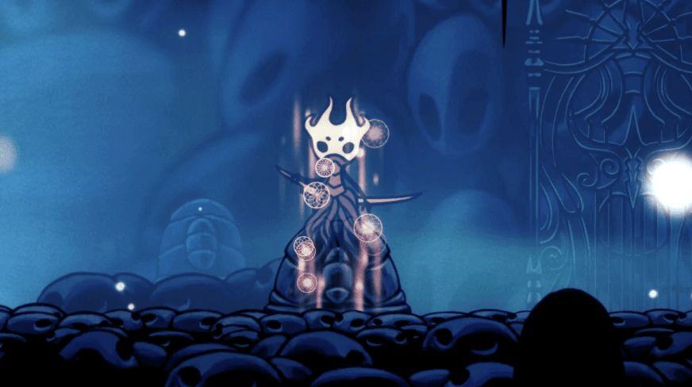

瑞维克BOSS战设计
今天突发奇想感觉瑞维克可以做成一个boss，于是花了一下午把目前的构思写了下来，欢迎各位前来赤石
瑞维克（Revek）是《空洞骑士》中灵魂沼地的鬼魂守护者。在灵魂沼地对他使用梦之钉即可进入他的梦境然后与之战斗
场景布置：
初步构想为灵魂沼地的背景，中央坐落着一颗巨大的低语之根，下面是一些他所守护的鬼魂居民的剪影
行动模式：
除了冲刺斩与噬魂爆炸的伤害为两格面具之外，其他伤害都为一格面具
1. 冲刺斩：与原版不同的是，瑞维克不会一直对小骑士冲刺斩，而是连续三下的从不同方向进行冲刺斩，每次造成两格面具的伤害，冲刺间隔与无上辐光的光辐射一样
2. 剑波：以瑞维克为中心向小骑士的方向释放一道横跨屏幕的剑波，造成一格面具伤害
3. 噬魂治疗：若小骑士的灵魂大于等于33，则会消耗小骑士33的灵魂为自己恢复一定数量的生命值，并以自己为中心发生一定范围的爆炸，对小骑士造成两格面具的伤害（前辈狂喜），若在此时对他使用梦之钉则会打断噬魂并对其造成大量伤害
4. 格挡：若小骑士与瑞维克距离太近，则会用他的武器摆出防御姿态，防御小骑士正面、向上和向下的骨钉和法术攻击。如果成功格挡下攻击，不仅不会受伤，还会向前刺击，刺击范围覆盖50%场地
5. 下刺：传送到小骑士上方向下猛砸并向左右产生冲击波
6. 骨钉刺击：在场地上随机位置生成三根骨钉射向小骑士的方向，每根骨钉间隔0.5-1秒（泽若与马爹同款技能（））
打法策略：
1. 与其他boss不同，瑞维克是唯一一个能用梦之钉对其造成伤害的boss，对其使用梦之钉可对他造成33点伤害，如果搭配舞梦者，造成的伤害将翻倍为66，因此在瑞维克的战斗中，舞梦者的搭配显得十分重要
2. 瑞维克进行噬魂治疗的时间略大于搭配舞梦者挥动梦之钉的时间，因此在瑞维克进行噬魂治疗的时候需要选择合适的时机对其使用梦之钉
3. 瑞维克进行下刺的时候有一定的时间间隔，可以搭配下砸，因此搭配萨满之石能对其造成更多伤害
4. 冲刺斩与骨钉刺击可以通过黑冲，下砸躲过，冲刺斩还可透过拼刀免除伤害，如果无法选择好合适的拼刀时机，搭配锋利之影可对其造成伤害
硬直条件：
瑞维克只能通过使用梦之钉使其硬直，持续3秒，硬直过程中，骨钉，法术无法对其产生伤害，但能为小骑士回魂，如果使用梦之钉仍能对其产生伤害，并直接使其取消硬直状态
2. 瑞维克进行噬魂治疗的时间略大于搭配舞梦者挥动梦之钉的时间，因此在瑞维克进行噬魂治疗的时候需要选择合适的时机对其使用梦之钉
使用梦之钉次数：3次
神局：
“我守护着沼池边的墓地”
“强大与忠诚的灵魂守护神”
生命值
调谐级：950
进升级：950
辐辉级：950
梦语
● 守护......这片安息之地
● 彼岸的...花海
● 保护，终生的使命
游戏剧情：
● 在初次见到瑞维克时，与他进行对话，他会与原版一样警告小骑士，如果伤害这里的鬼魂居民们，就要面对恶果。此时如果对他或者其他鬼魂居民使用梦之钉，瑞维克依然会对小骑士进行冲刺斩
● 如果对墓地中的其他所有鬼魂使用梦之钉后，他会沮丧，表示自己忘记了一项重要的使命，但想不起来是什么，再次对他使用梦之钉，他会消失，如果再次回到灵魂沼地，在他的位置使用梦之钉即可进入boss战
● 如果小骑士携带娇嫩的花进入战斗，在战斗过程中花并不会被损毁，如果战斗失败，小骑士会退出梦境并且花被损毁，如果战斗胜利，从战斗中退出来后会发现此时灵魂沼地开满了娇嫩的花并且除了瑞维克外所有的鬼魂居民会重新出现，再次与他们对话时他们都会表示记得曾经有个战士一直在守护他们但已经忘记了瑞维克
其他信息：
● 瑞维克的技能骨钉刺击的骨钉来源于灵魂沼池的一位鬼魂居民——百钉战士的三根骨钉
● 瑞维克的boss战的灵感是我突发奇想想出来的，但由于我不会做mod所以整体看下来十分抽象（